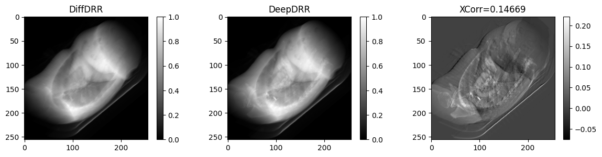
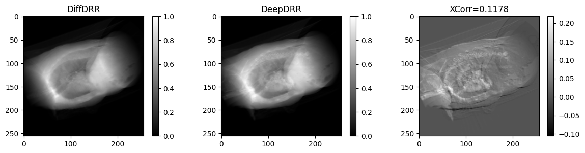

from inspect import getfile
from pathlib import Path
import deepdrr
import matplotlib.pyplot as plt
import numpy as np
import torch
from deepdrr import MobileCArm, Projector, Volume, geo
from deepdrr.load_dicom import load_dicom
from diffdrr.detector import diffdrr_to_deepdrr
from diffdrr.drr import DRR
from diffdrr.metrics import NormalizedCrossCorrelation2dConverting to DeepDRR
It just involves changing the order of Euler angles
SDR = 400
P = 4.0# Load a DICOM and extract voxel information
example_ct_path = str(Path(getfile(DRR)).parent / "data/cxr") + "/"
volume, materials, spacing = load_dicom(example_ct_path)
# Make volume conventions same as DiffDR
preprocess = lambda x: np.rot90(x, -1)[:, ::-1]
volume = preprocess(volume)
for key, value in materials.items():
materials[key] = preprocess(value)
# Use the center of the volume as the "world" coordinates. The origin is the (0, 0, 0) index of the volume in the world frame.
vol_center = (np.array(volume.shape) - 1) / 2 * spacing
origin = geo.point(-vol_center[0], -vol_center[1], -vol_center[2])
# Create the volume object with segmentation
patient = Volume.from_parameters(
data=volume,
materials=materials,
origin=origin,
spacing=spacing,
anatomical_coordinate_system="LPS",
)
patient.orient_patient(head_first=True, supine=True)Using downloaded and verified file: /home/vivekg/datasets/DeepDRR_DATA/model_segmentation.pth.tar# defines the C-Arm device, which is a convenience class for positioning the Camera.
# isocenter=volume.center_in_world
carm = MobileCArm(
isocenter=patient.center_in_world,
rotate_camera_left=False,
source_to_detector_distance=SDR * 2,
source_to_isocenter_vertical_distance=SDR,
pixel_size=P,
sensor_height=256,
sensor_width=256,
min_alpha=-720,
max_alpha=720,
min_beta=-720,
max_beta=720,
)
def test_phantom_deepdrr(alpha, beta, gamma):
with Projector(
volume=patient,
carm=carm,
) as projector:
carm.move_to(
alpha=np.rad2deg(alpha),
beta=np.rad2deg(np.pi / 2 - beta),
gamma=np.rad2deg(-gamma),
degrees=True,
)
img = (
projector()
) # The first run doesn't use updated parameters, for some reason?
img = projector()[:, ::-1].copy()
return imgdef test_phantom_diffdrr(alpha, beta, gamma, sdr=SDR, p=P):
bx, by, bz = (torch.tensor(volume.shape) - 1) * torch.tensor(spacing) / 2
drr = DRR(volume, spacing, sdr=SDR, height=256, delx=P, convention="deepdrr")
img = drr(
diffdrr_to_deepdrr(torch.tensor([[alpha, beta, gamma]])),
torch.tensor([[bx, by, bz]]),
parameterization="euler_angles",
convention="YZX",
)
img = img / img.max()
return imgfor idx in range(5):
alpha = np.random.uniform(-torch.pi, torch.pi)
beta = np.random.uniform(-torch.pi, torch.pi)
gamma = np.random.uniform(-torch.pi, torch.pi)
diff = test_phantom_diffdrr(alpha, beta, gamma).squeeze().numpy()
deep = test_phantom_deepdrr(alpha, beta, gamma)
metric = NormalizedCrossCorrelation2d()(
torch.tensor(diff[np.newaxis, np.newaxis, ...]),
torch.tensor(deep[np.newaxis, np.newaxis, ...]),
).item()
plt.figure(figsize=(12, 3))
plt.subplot(131)
plt.title("DiffDRR")
plt.imshow(diff, cmap="gray")
plt.colorbar()
plt.subplot(132)
plt.title("DeepDRR")
plt.imshow(deep, cmap="gray")
plt.colorbar()
plt.subplot(133)
plt.title(f"NCC = {metric:.5g}")
plt.imshow(deep - diff, cmap="gray")
plt.colorbar()
plt.tight_layout()
plt.show()
